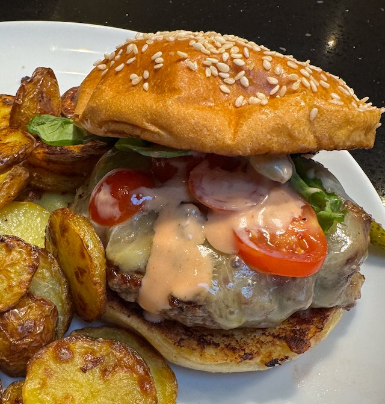

Smash Burger

Ingredients
- 4 buns
- 500g mince
- salt and pepper
- burger sauce
- 2 tbsp mayonnaise
- 2 tbsp ketchup
- 1 tsp pickle juice
- toppings
- lettuce
- tomato
- gherkins
- cheese
Method
Make the burger sauce by whisking together the mayo, ketchup and pickle juice.
Split mince into 4, and gently roll into balls. Salt and pepper one side generously.
Heat a frying pan to hot. Add tablespoon oil, and add the mince salt side down. Should sizzle loudly, if it doesn't pan wasn't hot enough. Take a greased metal spatula and firmly smash the patty down very flat like maybe 10mm.
Don't touch the burger. Cook for 4 min. Season the raw side.
Flip the burger. If cheeseburgering put the cheese on top.
Cook for another 3 minutes without moving it. Don't fiddle with it. Take out of the pan and set on a paper towel to drain.
Toast the buns cut side down for a minute in the pan
Dress with burger sauce, lettuce, gerkins and tomato.